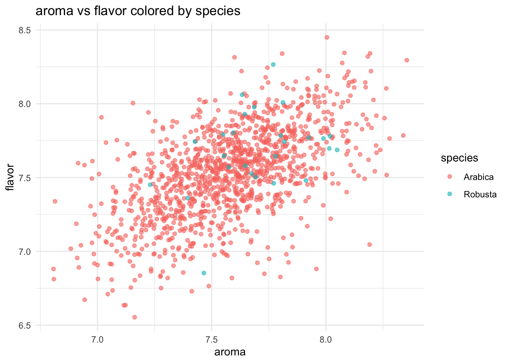
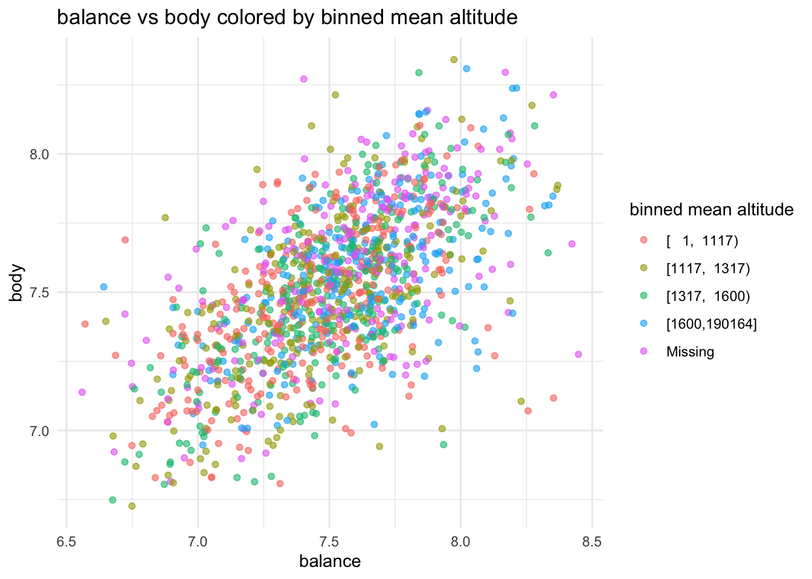

# Load necessary libraries
library(dplyr)
library(purrr)
library(knitr)
library(Hmisc) # For cut2
library(tidyr) # For replace_na
library(readr)
library(ggplot2)Data Challenge 3
# Load coffee ratings data
coffee_ratings <- read.csv('https://raw.githubusercontent.com/rfordatascience/tidytuesday/master/data/2020/2020-07-07/coffee_ratings.csv')
coffee_ratings_cleaned <- coffee_ratings %>%
mutate(
across(everything(), ~ replace_na(as.character(.), "Missing")),
altitude_mean_meters = as.numeric(altitude_mean_meters),
binned_mean_altitude = cut2(altitude_mean_meters, g = 4), # Automatically bins into 4 groups
binned_mean_altitude = replace_na(as.character(binned_mean_altitude), "Missing"),
across(aroma:moisture, as.numeric)
)
# Step 2: Function to calculate mean and standard deviation
calc_mean_sd <- function(x) {
mean_val <- mean(x, na.rm = TRUE)
sd_val <- sd(x, na.rm = TRUE)
paste("Mean:", round(mean_val, 2), ", SD:", round(sd_val, 2))
}
# Step 3: Use map to calculate tables for different groups
summary_table <- function(data, group_var) {
data %>%
group_by(!!sym(group_var)) %>%
summarise(across(aroma:moisture, calc_mean_sd), .groups = 'drop') %>%
kable(caption = paste("Summary by", group_var))
}
# Define grouping variables
group_vars <- c("species", "country_of_origin", "binned_mean_altitude")
# Calculate summary tables using map
summary_tables <- map(group_vars, ~ summary_table(coffee_ratings_cleaned, .x))
# Display summary tables
summary_tables[[1]] # Summary by species| species | aroma | flavor | aftertaste | acidity | body | balance | uniformity | clean_cup | sweetness | cupper_points | moisture |
|---|---|---|---|---|---|---|---|---|---|---|---|
| Arabica | Mean: 7.56 , SD: 0.38 | Mean: 7.52 , SD: 0.4 | Mean: 7.4 , SD: 0.41 | Mean: 7.53 , SD: 0.38 | Mean: 7.52 , SD: 0.36 | Mean: 7.52 , SD: 0.41 | Mean: 9.83 , SD: 0.56 | Mean: 9.83 , SD: 0.77 | Mean: 9.9 , SD: 0.53 | Mean: 7.5 , SD: 0.47 | Mean: 0.09 , SD: 0.05 |
| Robusta | Mean: 7.7 , SD: 0.3 | Mean: 7.63 , SD: 0.3 | Mean: 7.56 , SD: 0.34 | Mean: 7.66 , SD: 0.26 | Mean: 7.51 , SD: 0.73 | Mean: 7.54 , SD: 0.53 | Mean: 9.9 , SD: 0.24 | Mean: 9.93 , SD: 0.21 | Mean: 7.68 , SD: 0.32 | Mean: 7.76 , SD: 0.33 | Mean: 0.07 , SD: 0.06 |
summary_tables[[2]] # Summary by country of origin| country_of_origin | aroma | flavor | aftertaste | acidity | body | balance | uniformity | clean_cup | sweetness | cupper_points | moisture |
|---|---|---|---|---|---|---|---|---|---|---|---|
| Brazil | Mean: 7.55 , SD: 0.33 | Mean: 7.57 , SD: 0.28 | Mean: 7.44 , SD: 0.27 | Mean: 7.51 , SD: 0.26 | Mean: 7.54 , SD: 0.25 | Mean: 7.53 , SD: 0.3 | Mean: 9.88 , SD: 0.48 | Mean: 9.85 , SD: 0.61 | Mean: 9.95 , SD: 0.31 | Mean: 7.56 , SD: 0.32 | Mean: 0.08 , SD: 0.05 |
| Burundi | Mean: 7.42 , SD: 0.47 | Mean: 7.46 , SD: 0.3 | Mean: 7.25 , SD: 0.11 | Mean: 7.42 , SD: 0.12 | Mean: 7.29 , SD: 0.3 | Mean: 7.42 , SD: 0.47 | Mean: 10 , SD: 0 | Mean: 10 , SD: 0 | Mean: 10 , SD: 0 | Mean: 7.58 , SD: 0.35 | Mean: 0.06 , SD: 0.08 |
| China | Mean: 7.64 , SD: 0.32 | Mean: 7.63 , SD: 0.35 | Mean: 7.48 , SD: 0.33 | Mean: 7.58 , SD: 0.29 | Mean: 7.57 , SD: 0.21 | Mean: 7.55 , SD: 0.26 | Mean: 9.96 , SD: 0.17 | Mean: 9.96 , SD: 0.17 | Mean: 9.92 , SD: 0.23 | Mean: 7.65 , SD: 0.33 | Mean: 0.09 , SD: 0.04 |
| Colombia | Mean: 7.65 , SD: 0.27 | Mean: 7.6 , SD: 0.18 | Mean: 7.52 , SD: 0.21 | Mean: 7.56 , SD: 0.28 | Mean: 7.61 , SD: 0.27 | Mean: 7.71 , SD: 0.26 | Mean: 9.93 , SD: 0.38 | Mean: 9.95 , SD: 0.37 | Mean: 9.95 , SD: 0.36 | Mean: 7.62 , SD: 0.24 | Mean: 0.06 , SD: 0.06 |
| Costa Rica | Mean: 7.67 , SD: 0.31 | Mean: 7.54 , SD: 0.29 | Mean: 7.53 , SD: 0.28 | Mean: 7.57 , SD: 0.31 | Mean: 7.54 , SD: 0.32 | Mean: 7.64 , SD: 0.35 | Mean: 9.86 , SD: 0.57 | Mean: 9.87 , SD: 0.55 | Mean: 9.91 , SD: 0.48 | Mean: 7.66 , SD: 0.39 | Mean: 0.08 , SD: 0.05 |
| Cote d?Ivoire | Mean: 7.42 , SD: NA | Mean: 7.25 , SD: NA | Mean: 6.83 , SD: NA | Mean: 7 , SD: NA | Mean: 7.33 , SD: NA | Mean: 7.08 , SD: NA | Mean: 9.33 , SD: NA | Mean: 10 , SD: NA | Mean: 10 , SD: NA | Mean: 7.08 , SD: NA | Mean: 0.13 , SD: NA |
| Ecuador | Mean: 7.58 , SD: 0.14 | Mean: 7.64 , SD: 0.05 | Mean: 7.55 , SD: 0.21 | Mean: 7.69 , SD: 0.1 | Mean: 6.03 , SD: 1.56 | Mean: 6.97 , SD: 1.49 | Mean: 10 , SD: 0 | Mean: 10 , SD: 0 | Mean: 8.72 , SD: 1.16 | Mean: 8.03 , SD: 0.49 | Mean: 0.03 , SD: 0.05 |
| El Salvador | Mean: 7.67 , SD: 0.28 | Mean: 7.65 , SD: 0.31 | Mean: 7.57 , SD: 0.34 | Mean: 7.59 , SD: 0.41 | Mean: 7.61 , SD: 0.26 | Mean: 7.71 , SD: 0.3 | Mean: 9.94 , SD: 0.2 | Mean: 9.94 , SD: 0.2 | Mean: 9.81 , SD: 0.31 | Mean: 7.56 , SD: 0.28 | Mean: 0.05 , SD: 0.06 |
| Ethiopia | Mean: 7.9 , SD: 0.35 | Mean: 8.01 , SD: 0.36 | Mean: 7.89 , SD: 0.36 | Mean: 8.04 , SD: 0.32 | Mean: 7.92 , SD: 0.32 | Mean: 7.97 , SD: 0.31 | Mean: 9.88 , SD: 0.3 | Mean: 9.95 , SD: 0.17 | Mean: 9.86 , SD: 0.34 | Mean: 8.05 , SD: 0.41 | Mean: 0.08 , SD: 0.05 |
| Guatemala | Mean: 7.54 , SD: 0.31 | Mean: 7.49 , SD: 0.37 | Mean: 7.27 , SD: 0.38 | Mean: 7.6 , SD: 0.28 | Mean: 7.48 , SD: 0.3 | Mean: 7.47 , SD: 0.32 | Mean: 9.85 , SD: 0.41 | Mean: 9.89 , SD: 0.69 | Mean: 9.87 , SD: 0.7 | Mean: 7.39 , SD: 0.41 | Mean: 0.1 , SD: 0.03 |
| Haiti | Mean: 7.15 , SD: 0.36 | Mean: 7 , SD: 0.35 | Mean: 7.11 , SD: 0.44 | Mean: 7.13 , SD: 0.34 | Mean: 7.28 , SD: 0.33 | Mean: 7.06 , SD: 0.35 | Mean: 9.78 , SD: 0.35 | Mean: 8.55 , SD: 2.25 | Mean: 9.11 , SD: 1.61 | Mean: 7.01 , SD: 0.56 | Mean: 0.11 , SD: 0.02 |
| Honduras | Mean: 7.29 , SD: 1.05 | Mean: 7.23 , SD: 1.07 | Mean: 7.06 , SD: 1.06 | Mean: 7.23 , SD: 1.06 | Mean: 7.24 , SD: 1.06 | Mean: 7.16 , SD: 1.08 | Mean: 9.65 , SD: 1.45 | Mean: 9.64 , SD: 1.46 | Mean: 9.66 , SD: 1.45 | Mean: 7.19 , SD: 1.07 | Mean: 0.11 , SD: 0.01 |
| India | Mean: 7.7 , SD: 0.17 | Mean: 7.62 , SD: 0.28 | Mean: 7.57 , SD: 0.33 | Mean: 7.64 , SD: 0.37 | Mean: 7.66 , SD: 0.24 | Mean: 7.67 , SD: 0.27 | Mean: 9.9 , SD: 0.24 | Mean: 9.95 , SD: 0.18 | Mean: 7.62 , SD: 0.38 | Mean: 7.76 , SD: 0.33 | Mean: 0.04 , SD: 0.05 |
| Indonesia | Mean: 7.65 , SD: 0.33 | Mean: 7.57 , SD: 0.32 | Mean: 7.42 , SD: 0.33 | Mean: 7.49 , SD: 0.41 | Mean: 7.63 , SD: 0.32 | Mean: 7.52 , SD: 0.41 | Mean: 9.93 , SD: 0.21 | Mean: 9.97 , SD: 0.15 | Mean: 9.97 , SD: 0.15 | Mean: 7.42 , SD: 0.65 | Mean: 0.1 , SD: 0.05 |
| Japan | Mean: 7.75 , SD: NA | Mean: 7.75 , SD: NA | Mean: 7.75 , SD: NA | Mean: 7.42 , SD: NA | Mean: 8.08 , SD: NA | Mean: 7.83 , SD: NA | Mean: 10 , SD: NA | Mean: 10 , SD: NA | Mean: 10 , SD: NA | Mean: 8.08 , SD: NA | Mean: 0.12 , SD: NA |
| Kenya | Mean: 7.79 , SD: 0.28 | Mean: 7.78 , SD: 0.22 | Mean: 7.71 , SD: 0.21 | Mean: 7.87 , SD: 0.28 | Mean: 7.73 , SD: 0.2 | Mean: 7.8 , SD: 0.22 | Mean: 9.97 , SD: 0.13 | Mean: 9.97 , SD: 0.13 | Mean: 9.97 , SD: 0.13 | Mean: 7.71 , SD: 0.53 | Mean: 0.08 , SD: 0.05 |
| Laos | Mean: 7.5 , SD: 0.14 | Mean: 7.5 , SD: 0.17 | Mean: 7.28 , SD: 0.13 | Mean: 7.31 , SD: 0.13 | Mean: 7.36 , SD: 0.17 | Mean: 7.42 , SD: 0.14 | Mean: 10 , SD: 0 | Mean: 10 , SD: 0 | Mean: 10 , SD: 0 | Mean: 7.47 , SD: 0.13 | Mean: 0.08 , SD: 0.07 |
| Malawi | Mean: 7.57 , SD: 0.13 | Mean: 7.39 , SD: 0.13 | Mean: 7.26 , SD: 0.15 | Mean: 7.41 , SD: 0.17 | Mean: 7.34 , SD: 0.13 | Mean: 7.37 , SD: 0.13 | Mean: 10 , SD: 0 | Mean: 10 , SD: 0 | Mean: 10 , SD: 0 | Mean: 7.38 , SD: 0.15 | Mean: 0.12 , SD: 0.01 |
| Mauritius | Mean: 7.25 , SD: NA | Mean: 7.25 , SD: NA | Mean: 7.17 , SD: NA | Mean: 7.17 , SD: NA | Mean: 7.25 , SD: NA | Mean: 7.17 , SD: NA | Mean: 10 , SD: NA | Mean: 10 , SD: NA | Mean: 10 , SD: NA | Mean: 7.25 , SD: NA | Mean: 0.12 , SD: NA |
| Mexico | Mean: 7.46 , SD: 0.27 | Mean: 7.38 , SD: 0.33 | Mean: 7.23 , SD: 0.32 | Mean: 7.43 , SD: 0.27 | Mean: 7.38 , SD: 0.21 | Mean: 7.33 , SD: 0.31 | Mean: 9.74 , SD: 0.6 | Mean: 9.66 , SD: 1.21 | Mean: 9.97 , SD: 0.22 | Mean: 7.31 , SD: 0.38 | Mean: 0.11 , SD: 0.03 |
| Missing | Mean: 6.75 , SD: NA | Mean: 6.75 , SD: NA | Mean: 6.42 , SD: NA | Mean: 6.83 , SD: NA | Mean: 7.58 , SD: NA | Mean: 7.5 , SD: NA | Mean: 10 , SD: NA | Mean: 10 , SD: NA | Mean: 10 , SD: NA | Mean: 7.25 , SD: NA | Mean: 0.1 , SD: NA |
| Myanmar | Mean: 7.3 , SD: 0.32 | Mean: 7.33 , SD: 0.2 | Mean: 7.12 , SD: 0.18 | Mean: 7.41 , SD: 0.19 | Mean: 7.27 , SD: 0.13 | Mean: 7.13 , SD: 0.17 | Mean: 10 , SD: 0 | Mean: 10 , SD: 0 | Mean: 10 , SD: 0 | Mean: 7.18 , SD: 0.22 | Mean: 0.01 , SD: 0.04 |
| Nicaragua | Mean: 7.33 , SD: 0.29 | Mean: 7.32 , SD: 0.36 | Mean: 7.2 , SD: 0.36 | Mean: 7.27 , SD: 0.4 | Mean: 7.4 , SD: 0.32 | Mean: 7.28 , SD: 0.4 | Mean: 9.79 , SD: 0.8 | Mean: 9.77 , SD: 0.82 | Mean: 9.82 , SD: 0.79 | Mean: 7.28 , SD: 0.46 | Mean: 0.11 , SD: 0.02 |
| Panama | Mean: 7.67 , SD: 0.39 | Mean: 7.62 , SD: 0.31 | Mean: 7.61 , SD: 0.34 | Mean: 7.7 , SD: 0.32 | Mean: 7.58 , SD: 0.22 | Mean: 7.88 , SD: 0.58 | Mean: 10 , SD: 0 | Mean: 10 , SD: 0 | Mean: 10 , SD: 0 | Mean: 7.64 , SD: 0.36 | Mean: 0.07 , SD: 0.05 |
| Papua New Guinea | Mean: 8.33 , SD: NA | Mean: 8.42 , SD: NA | Mean: 7.83 , SD: NA | Mean: 8.33 , SD: NA | Mean: 8 , SD: NA | Mean: 8.25 , SD: NA | Mean: 9.33 , SD: NA | Mean: 9.33 , SD: NA | Mean: 10 , SD: NA | Mean: 7.92 , SD: NA | Mean: 0.12 , SD: NA |
| Peru | Mean: 7.69 , SD: 0.39 | Mean: 7.66 , SD: 0.41 | Mean: 7.54 , SD: 0.41 | Mean: 7.7 , SD: 0.39 | Mean: 7.8 , SD: 0.27 | Mean: 7.67 , SD: 0.26 | Mean: 9.53 , SD: 0.55 | Mean: 9.47 , SD: 1.47 | Mean: 9.87 , SD: 0.28 | Mean: 7.6 , SD: 0.44 | Mean: 0.07 , SD: 0.06 |
| Philippines | Mean: 7.36 , SD: 0.48 | Mean: 7.23 , SD: 0.43 | Mean: 7.3 , SD: 0.48 | Mean: 7.27 , SD: 0.26 | Mean: 7.3 , SD: 0.33 | Mean: 7.4 , SD: 0.22 | Mean: 9.87 , SD: 0.3 | Mean: 10 , SD: 0 | Mean: 9.87 , SD: 0.3 | Mean: 7.23 , SD: 0.33 | Mean: 0.07 , SD: 0.07 |
| Rwanda | Mean: 7.83 , SD: NA | Mean: 7.92 , SD: NA | Mean: 7.75 , SD: NA | Mean: 7.83 , SD: NA | Mean: 7.75 , SD: NA | Mean: 7.75 , SD: NA | Mean: 9.33 , SD: NA | Mean: 9.33 , SD: NA | Mean: 9.33 , SD: NA | Mean: 8 , SD: NA | Mean: 0.11 , SD: NA |
| Taiwan | Mean: 7.53 , SD: 0.28 | Mean: 7.46 , SD: 0.31 | Mean: 7.4 , SD: 0.28 | Mean: 7.42 , SD: 0.29 | Mean: 7.45 , SD: 0.28 | Mean: 7.43 , SD: 0.31 | Mean: 9.89 , SD: 0.43 | Mean: 9.98 , SD: 0.11 | Mean: 9.96 , SD: 0.19 | Mean: 7.48 , SD: 0.74 | Mean: 0.08 , SD: 0.05 |
| Tanzania, United Republic Of | Mean: 7.57 , SD: 0.25 | Mean: 7.43 , SD: 0.23 | Mean: 7.42 , SD: 0.23 | Mean: 7.5 , SD: 0.19 | Mean: 7.48 , SD: 0.15 | Mean: 7.47 , SD: 0.19 | Mean: 10 , SD: 0 | Mean: 10 , SD: 0 | Mean: 10 , SD: 0 | Mean: 7.49 , SD: 0.21 | Mean: 0.12 , SD: 0.02 |
| Thailand | Mean: 7.48 , SD: 0.26 | Mean: 7.53 , SD: 0.32 | Mean: 7.47 , SD: 0.28 | Mean: 7.6 , SD: 0.29 | Mean: 7.55 , SD: 0.27 | Mean: 7.52 , SD: 0.31 | Mean: 9.94 , SD: 0.26 | Mean: 9.96 , SD: 0.24 | Mean: 9.96 , SD: 0.16 | Mean: 7.56 , SD: 0.37 | Mean: 0.09 , SD: 0.06 |
| Uganda | Mean: 7.88 , SD: 0.27 | Mean: 7.75 , SD: 0.24 | Mean: 7.62 , SD: 0.21 | Mean: 7.71 , SD: 0.2 | Mean: 7.72 , SD: 0.25 | Mean: 7.66 , SD: 0.16 | Mean: 10 , SD: 0 | Mean: 10 , SD: 0 | Mean: 9.36 , SD: 1.04 | Mean: 7.74 , SD: 0.21 | Mean: 0.11 , SD: 0.02 |
| United States | Mean: 7.83 , SD: 0.35 | Mean: 7.99 , SD: 0.54 | Mean: 7.85 , SD: 0.51 | Mean: 7.93 , SD: 0.45 | Mean: 7.84 , SD: 0.35 | Mean: 7.82 , SD: 0.38 | Mean: 9.87 , SD: 0.28 | Mean: 9.93 , SD: 0.21 | Mean: 9.5 , SD: 1.05 | Mean: 7.87 , SD: 0.5 | Mean: 0 , SD: 0 |
| United States (Hawaii) | Mean: 7.57 , SD: 0.29 | Mean: 7.58 , SD: 0.35 | Mean: 7.5 , SD: 0.33 | Mean: 7.62 , SD: 0.29 | Mean: 7.63 , SD: 0.27 | Mean: 7.64 , SD: 0.29 | Mean: 9.48 , SD: 0.72 | Mean: 9.56 , SD: 0.79 | Mean: 9.65 , SD: 0.78 | Mean: 7.59 , SD: 0.38 | Mean: 0.06 , SD: 0.05 |
| United States (Puerto Rico) | Mean: 7.65 , SD: 0.17 | Mean: 7.54 , SD: 0.34 | Mean: 7.48 , SD: 0.49 | Mean: 7.6 , SD: 0.21 | Mean: 7.66 , SD: 0.28 | Mean: 7.65 , SD: 0.53 | Mean: 9 , SD: 1.59 | Mean: 9.66 , SD: 0.39 | Mean: 9.83 , SD: 0.33 | Mean: 7.65 , SD: 0.66 | Mean: 0.06 , SD: 0.07 |
| Vietnam | Mean: 7.39 , SD: 0.36 | Mean: 7.38 , SD: 0.4 | Mean: 7.2 , SD: 0.33 | Mean: 7.36 , SD: 0.27 | Mean: 7.54 , SD: 0.33 | Mean: 7.46 , SD: 0.52 | Mean: 9.67 , SD: 0.5 | Mean: 9.92 , SD: 0.24 | Mean: 9.58 , SD: 1.18 | Mean: 7.72 , SD: 0.29 | Mean: 0.07 , SD: 0.06 |
| Zambia | Mean: 7.67 , SD: NA | Mean: 7.08 , SD: NA | Mean: 7.42 , SD: NA | Mean: 7.33 , SD: NA | Mean: 7.75 , SD: NA | Mean: 7.42 , SD: NA | Mean: 10 , SD: NA | Mean: 10 , SD: NA | Mean: 10 , SD: NA | Mean: 7.25 , SD: NA | Mean: 0 , SD: NA |
summary_tables[[3]] # Summary by binned mean altitude| binned_mean_altitude | aroma | flavor | aftertaste | acidity | body | balance | uniformity | clean_cup | sweetness | cupper_points | moisture |
|---|---|---|---|---|---|---|---|---|---|---|---|
| Missing | Mean: 7.55 , SD: 0.35 | Mean: 7.52 , SD: 0.39 | Mean: 7.43 , SD: 0.4 | Mean: 7.57 , SD: 0.35 | Mean: 7.57 , SD: 0.38 | Mean: 7.58 , SD: 0.35 | Mean: 9.68 , SD: 0.67 | Mean: 9.76 , SD: 0.66 | Mean: 9.77 , SD: 0.68 | Mean: 7.57 , SD: 0.48 | Mean: 0.07 , SD: 0.06 |
| [ 1, 1117) | Mean: 7.5 , SD: 0.27 | Mean: 7.46 , SD: 0.31 | Mean: 7.35 , SD: 0.3 | Mean: 7.45 , SD: 0.27 | Mean: 7.47 , SD: 0.29 | Mean: 7.43 , SD: 0.35 | Mean: 9.85 , SD: 0.54 | Mean: 9.82 , SD: 0.92 | Mean: 9.83 , SD: 0.61 | Mean: 7.44 , SD: 0.43 | Mean: 0.09 , SD: 0.05 |
| [1117, 1317) | Mean: 7.55 , SD: 0.32 | Mean: 7.48 , SD: 0.34 | Mean: 7.33 , SD: 0.36 | Mean: 7.5 , SD: 0.29 | Mean: 7.47 , SD: 0.28 | Mean: 7.47 , SD: 0.33 | Mean: 9.84 , SD: 0.45 | Mean: 9.76 , SD: 0.86 | Mean: 9.91 , SD: 0.36 | Mean: 7.42 , SD: 0.43 | Mean: 0.1 , SD: 0.04 |
| [1317, 1600) | Mean: 7.54 , SD: 0.55 | Mean: 7.49 , SD: 0.55 | Mean: 7.35 , SD: 0.55 | Mean: 7.51 , SD: 0.55 | Mean: 7.47 , SD: 0.53 | Mean: 7.47 , SD: 0.57 | Mean: 9.84 , SD: 0.71 | Mean: 9.86 , SD: 0.86 | Mean: 9.84 , SD: 0.89 | Mean: 7.44 , SD: 0.58 | Mean: 0.1 , SD: 0.04 |
| [1600,190164] | Mean: 7.69 , SD: 0.3 | Mean: 7.65 , SD: 0.33 | Mean: 7.55 , SD: 0.34 | Mean: 7.66 , SD: 0.34 | Mean: 7.62 , SD: 0.27 | Mean: 7.65 , SD: 0.33 | Mean: 9.94 , SD: 0.25 | Mean: 9.96 , SD: 0.32 | Mean: 9.92 , SD: 0.35 | Mean: 7.66 , SD: 0.37 | Mean: 0.08 , SD: 0.05 |
Problem2
# Function to remove outliers based on IQR
remove_outliers <- function(data, var) {
q1 <- quantile(data[[var]], 0.25, na.rm = TRUE)
q3 <- quantile(data[[var]], 0.75, na.rm = TRUE)
iqr <- q3 - q1
data %>% filter(data[[var]] >= (q1 - 1.5 * iqr) & data[[var]] <= (q3 + 1.5 * iqr))
}
# Function to create scatter plot
scatter_plot <- function(data, x_var, y_var, group_var) {
data <- remove_outliers(data, x_var) %>%
remove_outliers(y_var) # Remove outliers for both x and y variables
ggplot(data, aes_string(x = x_var, y = y_var, color = group_var)) +
geom_jitter(alpha = 0.6, width = 0.2, height = 0.2) +
labs(
title = paste(gsub("_", " ", x_var), "vs", gsub("_", " ", y_var), "colored by", gsub("_", " ", group_var)),
x = gsub("_", " ", x_var),
y = gsub("_", " ", y_var),
color = gsub("_", " ", group_var)
) +
theme_minimal()
}
# Define plot specifications as a tibble to use with pmap
plot_specs <- tibble(
data = list(coffee_ratings_cleaned, coffee_ratings_cleaned),
x_var = c("aroma", "balance"),
y_var = c("flavor", "body"),
group_var = c("species", "binned_mean_altitude")
)
# Generate and display plots using pmap
plots <- pmap(plot_specs, scatter_plot)
# Display each plot
print(plots[[1]]) # Aroma vs Flavor colored by Species
print(plots[[2]]) # Balance vs Body colored by Binned Mean Altitude